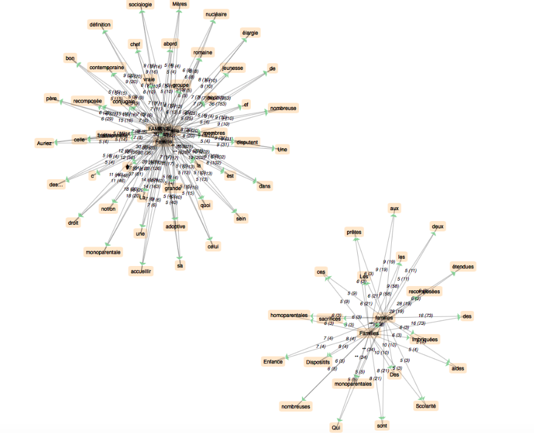
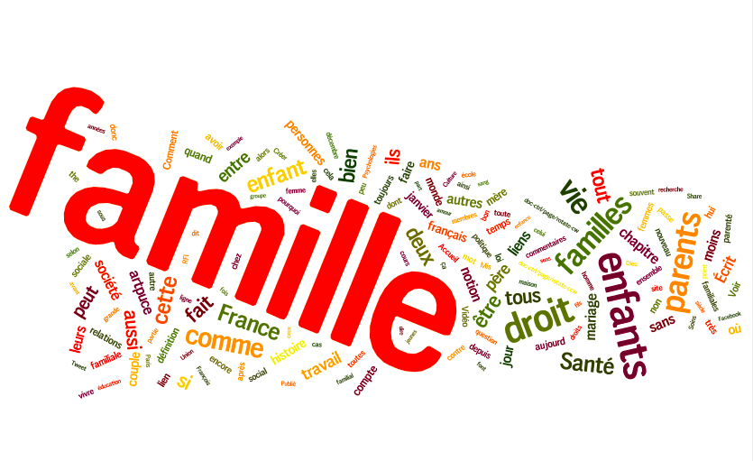

✽ ✽ ✽
✽ ✽ ✽
Dans cette partie, nous allons analyser la notion en français de notre mot clé "la notion de famille". Avant de commencer la partie d’analyse, nous pouvons d’abord interpréter notre mot clé : Notion de famille. Ce dernier a deux sens :
Pour vérifier cette hypothèse, il faut suivre 4 étapes :
>>> Veuillez cliquer pour télécharger le tableau final.
| DUMP | CONTEXT |
| Télécharger | Télécharger |
Avec notre script, nous obtenons enfin un beau tableau qui affiche les sites contenant notre motif et la fréquence, nous sommes presque arrivés à la fin ! Maintenant, nous allons analyser notre corpus. À noter que, le graphe ci-dessous est le résultat des cooccurrents du mot clé dans nos corpus français d'après le logiciel iTrameur.
Il s'agit de deux graphes, l'un concerne le mot famille au singulier, l'autre contient les coocurrents du mot famille au pluriel. En résumé, nous pouvons ranger tous ces mots fréquents dans les classes ci-dessous :
sens absolu : définition, notion
sociologie : sociologie, traditionnelle, contemporaine, droit
dimension : monoparentale, nombreuse, élargie, étendues
construction et membre : sein, membres, père, mère, groupe
phénomènes et problèmes sociaux : conjugale, imbriquée, recomposée, monoparentale, homoparentales, disputent
Pour faciliter et représenter plus intuitivement notre résultat, il est intéressant de montrer un nuage de mots, comme ci-dessous :
Pour le résultat final, veuillez consulter la rubrique "Résultats".